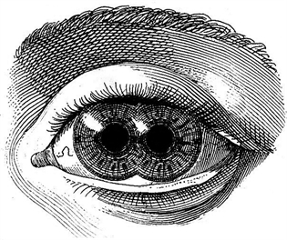

HYPNOSE & P.N.L.
"Ce qui caractérise l'être humain, c'est non seulement sa mobilité, mais aussi sa faculté d'acquérir des connaissances et sa capacité d'éprouver des émotions ; et puis il défend son intelligence de façon effective. Et deux personnes n'auront pas forcément les mêmes idées, mais toutes défendront leurs idées. Quand on a compris comment l'homme défend réellement ses idées et combien important est l'élément affectif qui intervient dans cette défense, on devrait se rendre compte que la première chose à faire, ce n'est pas d'essayer de contraindre l'être humain à modifier sa façon de penser ; il est préférable de se ranger à ses vues, de les modifier peu à peu et de créer des situations dans lesquelles l'individu modifiera lui-même volontairement sa façon de penser." Milton ERICKSON

L'hypnose Ericksonienne :
Caractérisée par une approche souple, indirecte (métaphores, imaginaire) et non dirigiste, cette forme d'hypnose a donné naissance à de nombreux courants de psychothérapie moderne : thérapie familiale, thérapie brève, P.N.L, etc. L'hypnose est un processus actif, un travail au cours duquel le sujet accède à des réponses et des changements qui apparaissent, le plus souvent, au-delà de la séance, sans que le sujet n'en prenne conscience.
Utilisée en psychothérapie, elle se situe dans une optique courte : une à dix séances, sur une durée de quelques semaines à quelques mois même pour des blocages lourds, cela en minimisant les possibilités de rechute ou de substitution de symptôme.
Pour Milton Erickson, l'inconscient est profondément bon et puissant. Il se révèle une puissance bienveillante avec laquelle l'état hypnotique doit permettre de coopérer. L'inconscient est capable de mobiliser des ressources intérieures, des potentialités susceptibles de conduire aux changements désirés. L'hypnose ericksonienne a pour but d'amener conscient et inconscient à travailler ensemble pour déclencher les changements utiles à la résolution du problème.
L'hypnose ericksonienne, initié par le docteur Milton ERICKSON, est une hypnose naturelle, utiisant le savoir et le savoir faire du sujet ; état spontané où le sujet, au cours de son travail hypnotique, va rechercher et trouver la solution au problème dont il souffre, excluant toute suggestion directe et injonction. C'est une hypnose respectueuse de l'écologie psychique,où l'inconscient est considéré comme un réservoir à ressource.
Caractérisée par une approche souple, indirecte (métaphores, imaginaire) et non dirigiste, cette forme d'hypnose a donné naissance à de nombreux courants de psychothérapie moderne : thérapie familiale, thérapie brève, P.N.L, etc. L'hypnose est un processus actif, un travail au cours duquel le sujet accède à des réponses et des changements qui apparaissent, le plus souvent, au-delà de la séance, sans que le sujet n'en prenne conscience.
Utilisée en psychothérapie, elle se situe dans une optique courte : une à dix séances, sur une durée de quelques semaines à quelques mois même pour des blocages lourds, cela en minimisant les possibilités de rechute ou de substitution de symptôme.
Pour Milton Erickson, l'inconscient est profondément bon et puissant. Il se révèle une puissance bienveillante avec laquelle l'état hypnotique doit permettre de coopérer. L'inconscient est capable de mobiliser des ressources intérieures, des potentialités susceptibles de conduire aux changements désirés. L'hypnose ericksonienne a pour but d'amener conscient et inconscient à travailler ensemble pour déclencher les changements utiles à la résolution du problème.
L'hypnose ericksonienne, initié par le docteur Milton ERICKSON, est une hypnose naturelle, utiisant le savoir et le savoir faire du sujet ; état spontané où le sujet, au cours de son travail hypnotique, va rechercher et trouver la solution au problème dont il souffre, excluant toute suggestion directe et injonction. C'est une hypnose respectueuse de l'écologie psychique,où l'inconscient est considéré comme un réservoir à ressource.
La Programmation Neuro Linguistique (P.N.L.) :
Inspirée du travail d'autres thérapeutes, dont Milton Erickson, la P.N.L. a été élaborée par Richard Bandler et John Grinder dans les années 1970 aux États-Unis. Leur démarche s'inscrit autant dans le domaine de la psychothérapie que ceux de la créativité, du sport, du management, de la pédagogie et de la communication.
La P.N.L. est un ensemble de techniques de communication et de transformation de soi qui s’intéresse à nos réactions plutôt qu’aux origines de nos comportements. Parce qu'elle privilégie le comment au pourquoi, propose une grille d’observation pour améliorer la perception que nous avons de nous-mêmes et des autres.
Son but est de permettre de programmer et reproduire ses propres modèles de réussite. Elle repose sur le principe que chaque personne a sa propre vision du monde, son propre univers, sa propre subjectivité. Ainsi, si deux personnes, dans le même contexte, observent la même situation, elles y verront, comprendront et communiqueront cette expérience de façon probablement différente. La P.N.L. s'appuie entre autre sur la modélisation qui est la recherche de modèles singuliers et leurs maitrises afin de pouvoir les utiliser efficacement dans des contextes appropriées.
Inspirée du travail d'autres thérapeutes, dont Milton Erickson, la P.N.L. a été élaborée par Richard Bandler et John Grinder dans les années 1970 aux États-Unis. Leur démarche s'inscrit autant dans le domaine de la psychothérapie que ceux de la créativité, du sport, du management, de la pédagogie et de la communication.
La P.N.L. est un ensemble de techniques de communication et de transformation de soi qui s’intéresse à nos réactions plutôt qu’aux origines de nos comportements. Parce qu'elle privilégie le comment au pourquoi, propose une grille d’observation pour améliorer la perception que nous avons de nous-mêmes et des autres.
Son but est de permettre de programmer et reproduire ses propres modèles de réussite. Elle repose sur le principe que chaque personne a sa propre vision du monde, son propre univers, sa propre subjectivité. Ainsi, si deux personnes, dans le même contexte, observent la même situation, elles y verront, comprendront et communiqueront cette expérience de façon probablement différente. La P.N.L. s'appuie entre autre sur la modélisation qui est la recherche de modèles singuliers et leurs maitrises afin de pouvoir les utiliser efficacement dans des contextes appropriées.
MILTON ERICKSON